1 · Introduction
The dataset consists 5165 image pairs and corresponding disparity maps, where 4156 image pairs are used for training, and 1009 image pairs are used for testing. The images are extracted from Apollo dataset. Ground truth has been acquired by accumulating 3D point clouds from Lidar and fitting 3D CAD models to individually moving cars (obtained from 3d car instance understanding dataset). The dataset contains varying traffic conditions with heavy occlusion, which are very challenging.
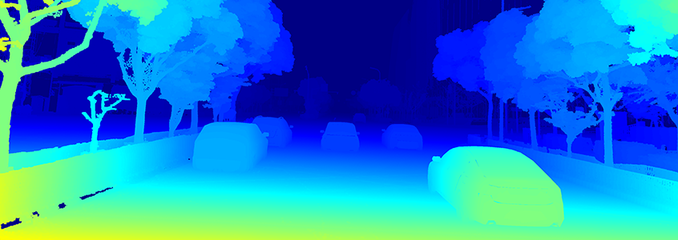
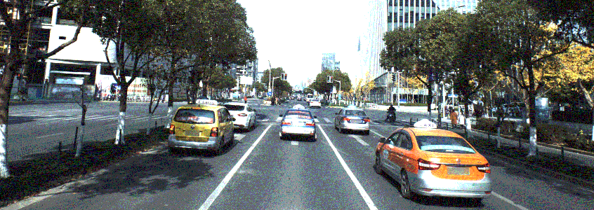
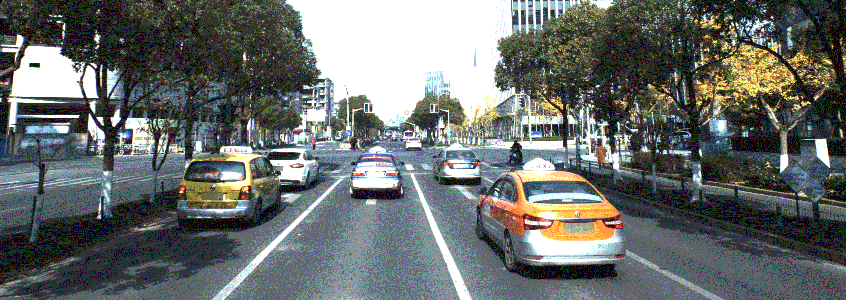
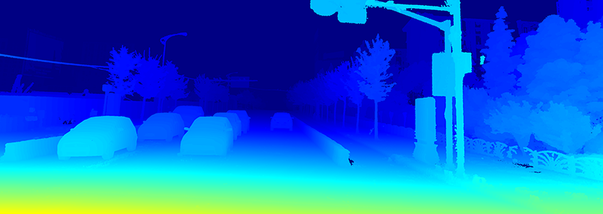
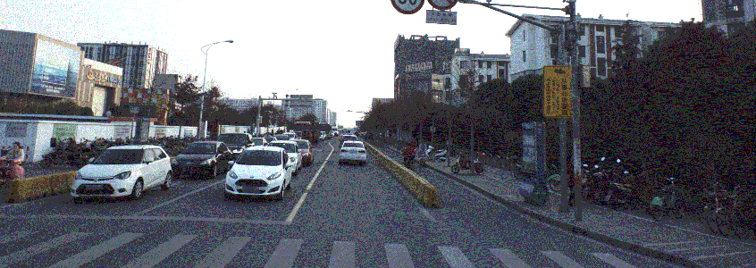
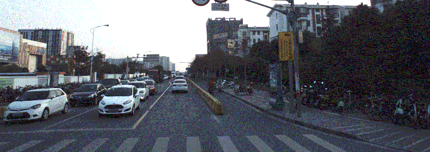
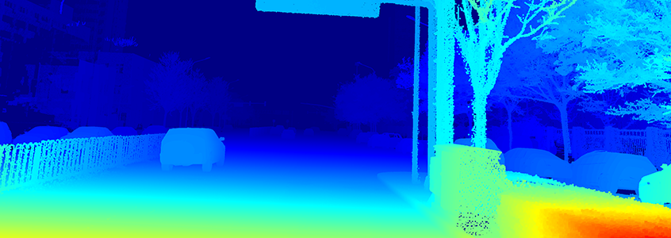
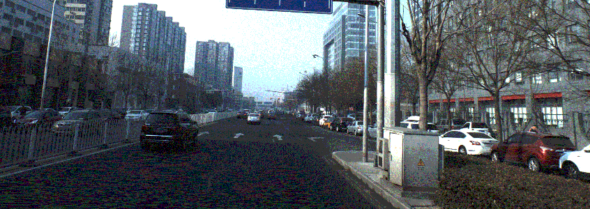
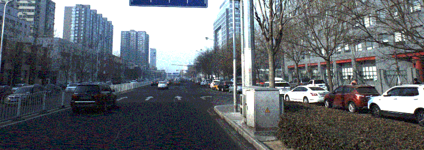
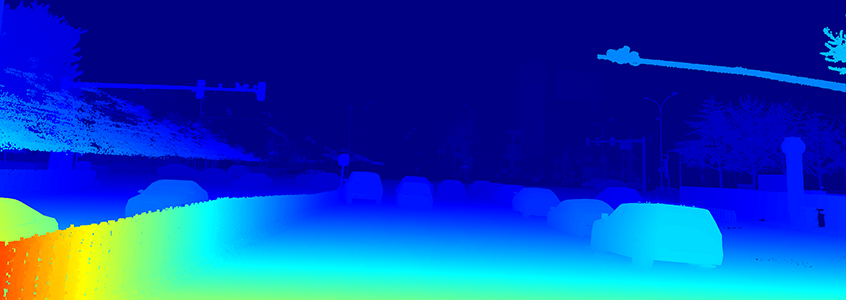
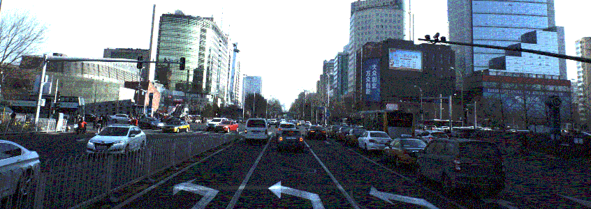
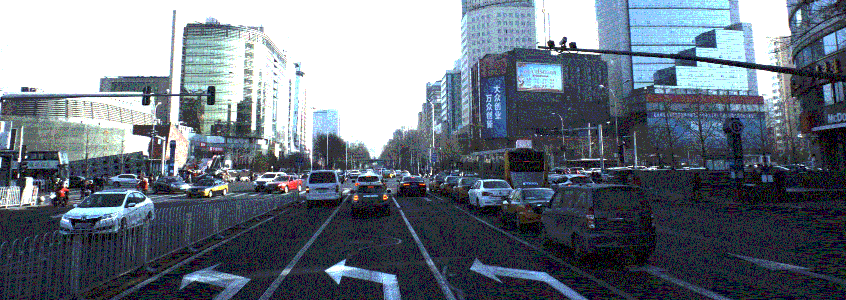
2 · Data Download
Training data
Testing data
3 · Data Structure
The structure of the dataset is following:
• intrinsic.txt: intrinsic parameters
• fg_mask: foreground mask
• bg_mask: background mask
• Camera5: images captured by camera 5
• Camera6: images captured by camera 6
• disparity: the ground truth disparity
Note that to show the disparity better, the disparity value is 200 times larger than groundtruth. If you upload results, the results should also be increased 200 times.
4 · Evaluation
The evaluation code are released on github here.
5 · Metric formula
For each image, given the predicted disparity di and the ground truth di*, the metric for evaluation is defined as:
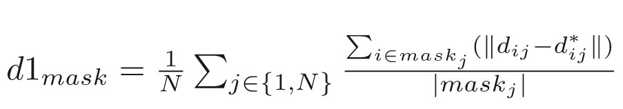
Here the mask can be either foreground (fg), background (bg) or the whole region (merge of fg and bg). N is the number of image
6 · Rules of ranking
Result benchmark will be:
| Rank |
Method |
D1_all |
D1_fg |
D1_bg |
| xxx |
xx |
xx
|
xx
|
xx
|
7 · Format of submission file
{split}/{data_type}/{image_name}
data_type:
disparity: the estimated disparity
The dataset we released is desensitized street view for academic use only.